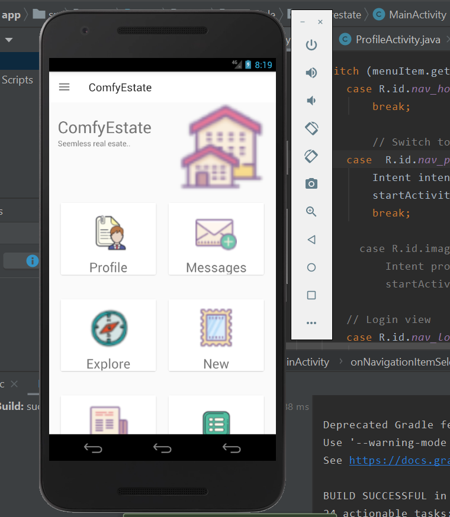
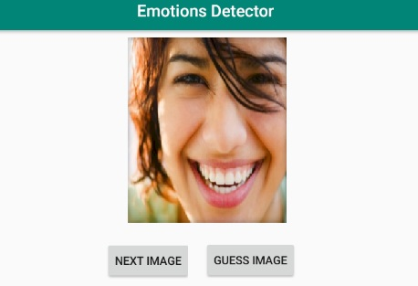

Academic Work Samples
Comfy Real estate App
This project consists of a mobile application that allows users to buy and sell property online. This app would also feature other options associated with real estate buying and selling such as renovation, staging, permits, and legal services although the buying and selling can be carried out without a real estate agent. We would like to make this app a veritable “one stop shop” for all activities associated with buying and selling property. Local vendors can also advertise their businesses to potential customers looking for their services (carpenters, lawyers, etc), and past customers can give reviews on these vendors. Users can also auction their property online and view best offers. This application will also include a forum that customers and contractors can use to discuss reviews on certain contractors or potential offers.
Airline System
A fully functional Airline Management System written in C# using the proper object oriented principles, this project was a requirment for our class. This system is capable of managing customers, managing flights and manging bookings just like a real world scenario on airports. It is a standalone program which can only be run on windows.
Socket.io Chat
A simple realtime chat application using the MEAN stack (MongoDB, Express, Angular, Node) and socket.io library. This chat application has many rooms where users can chat with each other. The main purpose of this application was to completely understand the MEAN stack, explore the new socket.io library, and host it on the cloud.
Activity Tracker
My Activity Tracker is an application used to keep track of your GPS location history. This tool allows you to record routes that can later be reviewed or shared. Whether jogging, biking, or even driving My Activity Tracker can help keep track of where you have been. This application intends to run on Android Devices with SDK versions 15 or higher.
Emotions Detector
An emotion detector android application which detects two emotions based on a picture; happy or sad. It works with the python library called tensorflow which is used for machine learning. This project was a great learning opportunity as this was a new experience for me which helped to develop my machine learning skills.
ToDo List
The conventional way to keep track of daily routines is writing them down in a notebook or planner. However, it is tedious to always have to carry additional items, while nearly everyone has their smartphone on them all the time, sometimes there’s a need to share the daily tasks. This application is intended for use by anyone who prefers to keep a to-do list.